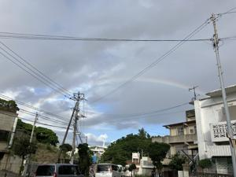
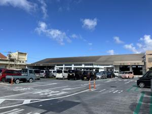

うるがいの話 ある日
最新: 車の名義変更の準備【うるがいの話 ある日】とは 一日だけのプログです
『うるがいの話』の最新一日だけのプログで、通信料が少なく経済的だ。カニの画像をクリックすると全ての日付が載る『うるがいの話』サイトを表示します
|
|
【うるがいの話】 うるがい(ｳﾙｶﾞｲ urugai)とは、『もずくがに』の名前でとても大きくなります。 |
|---|---|
|
|
【カミマヤーの話】 猫のことを方言でマヤーといいます。カミマヤー（kamimayaa）とは、神の猫のことです。 |
|
【たながぁの音楽】 たながぁ（ﾀﾅｶﾞｰ tanagaa）とは手長えびのことで、何種類かあり大きいのは車 エビぐらいになります。 |

|
【ぶながぁの話】 ぶながぁ(ﾌﾞﾅｶﾞｰ bunagaa)とは、赤い髪の毛、赤い身体、そして身長は１ｍ２０ｃｍ ぐらい、川の蟹を食べているの目撃された。場所は沖縄県国頭郡大宜味村のと ある村僕の隣近所に住んでいる爺さんから、聞いた話です。 |
|
|
【ギーマの話】 ギーマ(giima)とは、山原の里山に咲くスズランに似た、 花を付けます。実は食べられます、 気が付くと口の周りが紫になっています。 |
2024年10月23日 (水）車の名義変更の準備
15:53

語学留学する子供が、アパートを引き払って軽自動車を、私の所に置く
ことになった。念のためと、車の名義変更を子供から、私へ変更するこ
とにした。先月９月の天候が良くなかったこともあり、月一のバイクの
利用が滞っていた。ついでなので、天気の良かったきのう、軽自動車協
会へ行った。受付へ行って、提出書類の入手と手続きに必要なもの等を
確認した。住民票と車検証、お金はなし！。新しい車検証が貰えるまで
どのぐらい待てばいいですか、一時間ぐらい？と親切な受付に尋ねたが
明確な答えが無かった。現役の時、毎年このあたりに仕事で来ていたが
道が変わっているのに驚く。

朝から、提出書類を書く。記入例ももらったけど、相変わらず役所の物
は、これってイルノケと思う。住民票も市役所へ行って入手した（利用
者は、私一人だけ、スカスカ）。ついでに、期日前投票も行った。ここ
は、老人達が大勢いた。準備完了、提出は来月にする。
本日のバタフライピーの花、５つ収穫。
１５時４５分 ビットコインの総資産 ￥２９、６３１（↑１９）